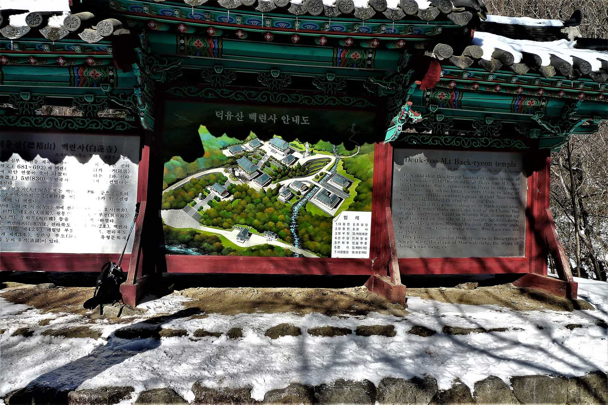
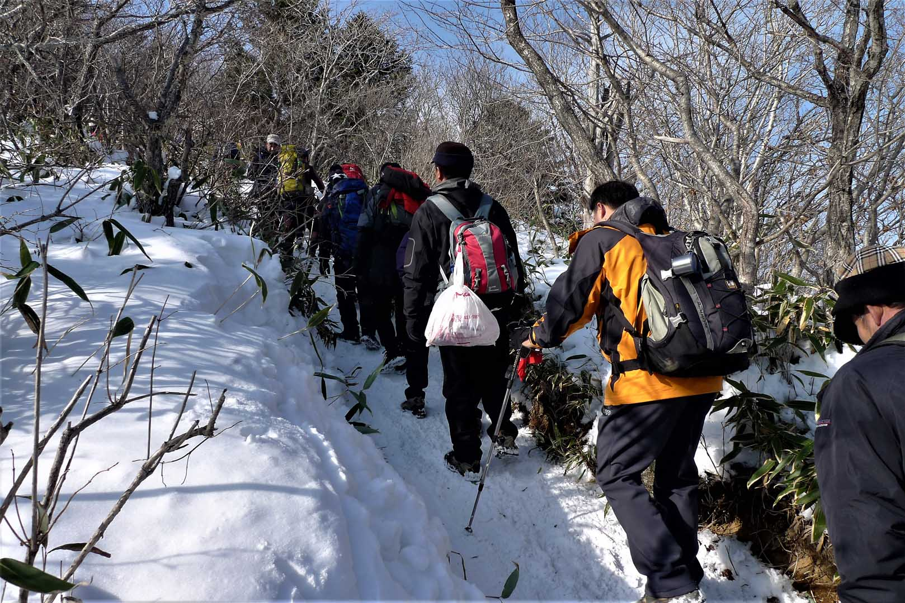
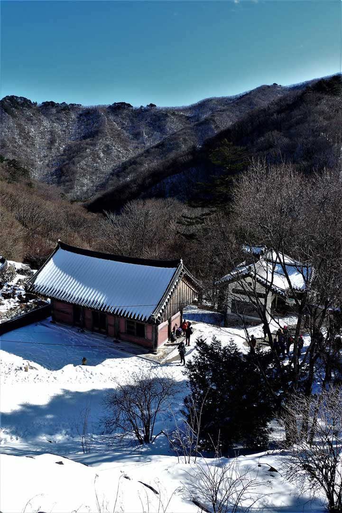

DeoGyuSan 덕유산 (Hike of 8 January 2012)

This mountain contains the fourth highest peak in South Korea, Hangjeokbong (항적봉) at 1611 meters which
is equivalent to about 5000 feet. It is a Korean National Park so there are very strict rules concerning
the hiking on this mountain. On January 8th 2012 we met at KAIST at 8:30 and proceeded to the MuJu (무주)
parking area. We started hiking at 10:00 as it takes at least an hour to get there from Daejeon. I was
surprised at the number of hiking groups in the parking lot as well as the number of buses hired to
transport them. Our final destination today was Jungbong Peak at 1594 m. It would be a cold hike but as
you climb you quickly become warm. It was well worth the hike for the specular view.
Ski resort facilities near the top

The first part of the trail was easy and we took one and a half hours to get to the Buddhist temple,
PaekReonSa (백련사), arriving around 12:00. The last portion of the hike was more difficult with many steep
pitches including a number of stairs. We arrived at the summit at 2:15. There were excellent views at
the summit and in the winter one can watch the skiers leaving for the slopes that reach down to the
parking lot. One really needs poles and crampons (eisen) when climbing the mountain in the winter as the
trail is slippery in some areas and steep towards the summit. Also the number of climbers blocking the
trail added to the difficulty of the hike.
Temple in the mountains

This pictures shows the lovely view looking down into the Buddhist temple covered in snow. On this day
we took the cable car down to the bottom which cost 8000won or 5600 won for senior citizen hikers.
Because the line for the cable car was so long, we ended up taking a taxi around the base of the
mountain back to the parking lot. We left the parking area at 3:15 p.m. arriving at the Daejeon world
cup stadium at 4:25 p.m. and then it took another fifteen minutes to KAIST parking area. The elevation
change from the parking lot is substantial and I am sure that this is one of the reasons this mountain
was chosen for one of the major ski areas of South Korea, the MuJu (무주) Ski Area.
In summary it was a tough hike especially the last portion below the summit. It was made additionally
difficult because of all the hikers on the trail to the summit as well as cold temperatures and winter
conditions although this didn’t deter the many hikers from reaching the summit, it rather added to the
sense of accomplishment!